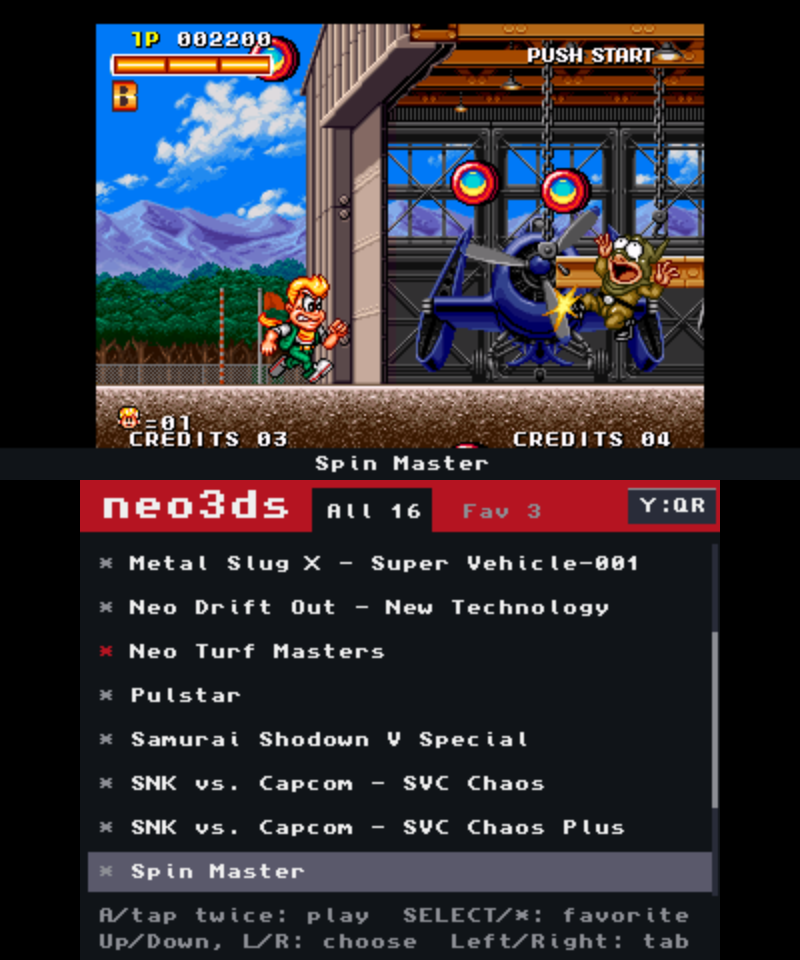

The arcade you remember,
now on your 3DS
Turn Neo Geo romsets into files that run on your 3DS. Convert in your browser or use the PC converter. Install the launcher to pick games from a list.
Convert on PC
macOS builds are Apple Silicon only. On an Intel Mac, use the browser converter.
Drag or use the direction buttons to rotate the device.
The selected game is not passed to the converter. Choose your own files there.
Go to converter →Launch and controls guide → · Transfer and installation guide →
Make it, then install it
The install file takes a minute or two on your PC.
-
1
Gather the romset
Put your game's MAME romset and the BIOS in one folder. Leave the zip names alone.
-
2
Drop it in the browser
A minute or two per game, mostly compressing graphics. Drop several zips and they convert one after another.
-
3
Put it on the 3DS
Install the CIA with FBI. The launcher file goes on the SD card. The download page walks through both.
A CIA per game, or one launcher
Game CIA
One file per game. Its own icon on the HOME menu.
If you're collecting a few
One launcher for all of them
Instead of installing a CIA per game, install the launcher once. The game files you put on the SD card show up as a list, and you pick from there. Only one HOME menu icon.

- Install onceInstall the launcher CIA with FBI once. To add a game, copy its .neo3ds file to /neo3ds/games/, or send it over Wi-Fi from the offline converter.
- Shared savesA game shares its key config, backup RAM and quick saves between the CIA and the launcher copy.
- Back in a tapIn a game, tap Game list on the bottom screen twice to return to the list.
What to have ready
- A 3DS Old 3DS / 2DS / New 3DS / New 2DS XL, with Luma3DS and FBI already installed.
- A web browser Chrome, Edge, Firefox or Safari. Roms stay inside the browser.
- Romsets you own A MAME romset zip and neogeo.zip. Neither is included here.
- The sound file
/3ds/dspfirm.cdcon the SD card
The romset name and chip CRCs have to match the MAME set.
If they don't, the converter won't recognise the zip.
What runs, what doesn't
It recognises 282 romsets and converts 242 of them. 26 have been played on an Old 3DS.
Find it by series
Worth knowing
- When a romset is tight for memory, the converter warns you first.
- Some decryption is implemented but never played, because we lack the ROMs.
- Metal Slug 2, X and 3 slow down in the same scenes the original board did. The FAQ says where.
- Games we could not check because we don't have the ROMs are listed in the README.
- KOF '98 doesn't convert: the MVS version has a protection chip. If the home set (kof98h) is in the zip, it's picked automatically.
Things people ask
Where do I get the ROMs?
Nowhere. You need romsets for games you own, and a built CIA contains ROM data, so don't share it.
Is it really 60 fps on an Old 3DS?
These ran at full speed on hardware: KOF '95-'99, 2000, 2002, Metal Slug 1, X, 3 and 5, Neo Turf Masters, Neo Drift Out, SVC Chaos and Samurai Shodown V Special. Metal Slug 2, X and 3 slow down in the same scenes the original board did, and Aero Fighters 3 stays playable.
Measured: KOF '98 went from 64.0MB to 20.3MB. A frame takes 16.7ms; 59.8fps. Technical notes
No sound?
The SD card needs /3ds/dspfirm.cdc; a tool like DSP1 creates it once.
What about a New 3DS?
The CIA asks for 804MHz and the L2 cache, which leaves a lot more headroom. We haven't confirmed it on hardware.
Can I use it commercially?
No: the included CPU cores (Cyclone 68000, DrZ80) allow non-commercial use only.
If it breaks, tell us
If a conversion failed or a game misbehaves, write it down here.
Legal
No ROMs, BIOS or game data are included here.
Convert only games you own, and never distribute a CIA you build.
neo3ds is a personal fan project, unaffiliated with SNK or Nintendo.
NEOGEO is a trademark of SNK CORPORATION; Nintendo 3DS of Nintendo.
Credits and third-party code are in third-party notices; the source is GPL-2.0.